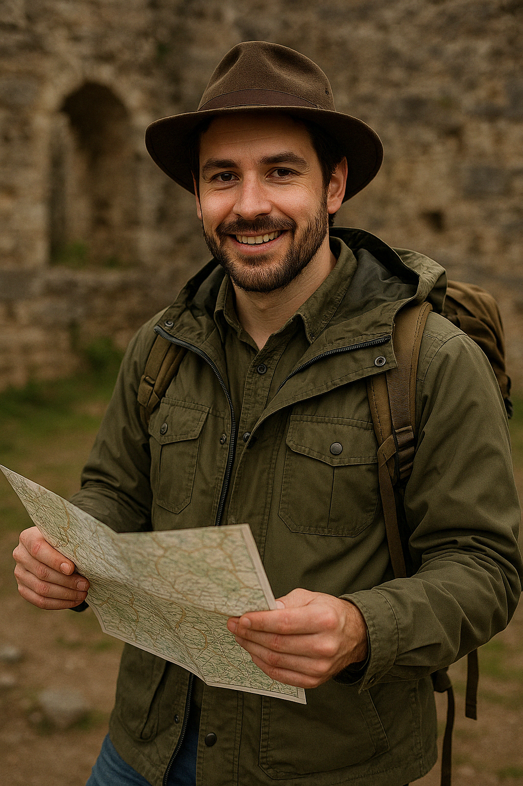
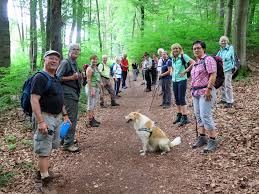
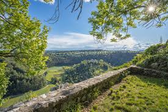
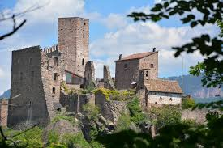
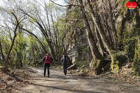
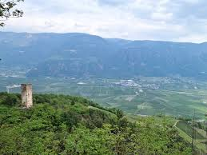

Geführt von: Tom L. – Outdoor-Guide & Hobby-Historiker
Region: Trifels & Berwartstein, Pfälzerwald
Schwierigkeit: Mittel
Dauer: ca. 4 Stunden
Gruppenanzahl: 15 Personen
Preis: 28€ Pro Person
Region: Trifels & Berwartstein, Pfälzerwald
Schwierigkeit: Mittel
Dauer: ca. 4 Stunden
Gruppenanzahl: 15 Personen
Preis: 28€ Pro Person
Beschreibung
Mystische Burgruinen, historische Geschichten und fantastische Ausblicke erwarten dich im Herzen des Pfälzerwalds.
Tom führt dich zu den Highlights der Region, mit kleinen geschichtlichen Anekdoten und Fotospots unterwegs.

Was dich erwartet
- Burgruinen Trifels & Berwartstein
- Spannende Mittelalter-Storys
- Aussichtspunkte über dem Waldmeer
- Picknickpause an einer alten Mauer
Mitbringen
Wanderschuhe, Kamera, Wasser und ggf. ein kleines Vesper.




